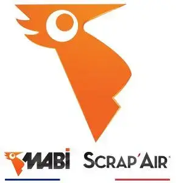
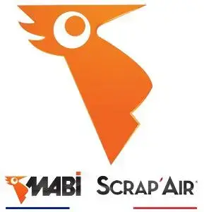

Pourquoi dératiser ?
"La dératisation est une étape cruciale pour protéger votre environnement des risques sanitaires et structurels causés par les rats. Voici les principales raisons pour lesquelles il est essentiel de procéder à une dératisation régulière."
- Prévention des maladies : Les rats sont porteurs de nombreuses maladies transmissibles à l'homme, telles que la leptospirose, la salmonellose, et d'autres infections graves.
- Protection des biens : Les rongeurs endommagent les structures, rongent les câbles électriques, les tuyaux et les matériaux de construction, pouvant provoquer des incendies ou des pannes coûteuses.
- Contrôle des infestations : Un programme de dératisation efficace permet de prévenir une reproduction rapide des rats, ce qui limite les infestations massives.
Une dératisation proactive aide à garantir un environnement sain, sécurisé et exempt de nuisibles, protégeant ainsi votre maison, votre entreprise et vos proches.


 
